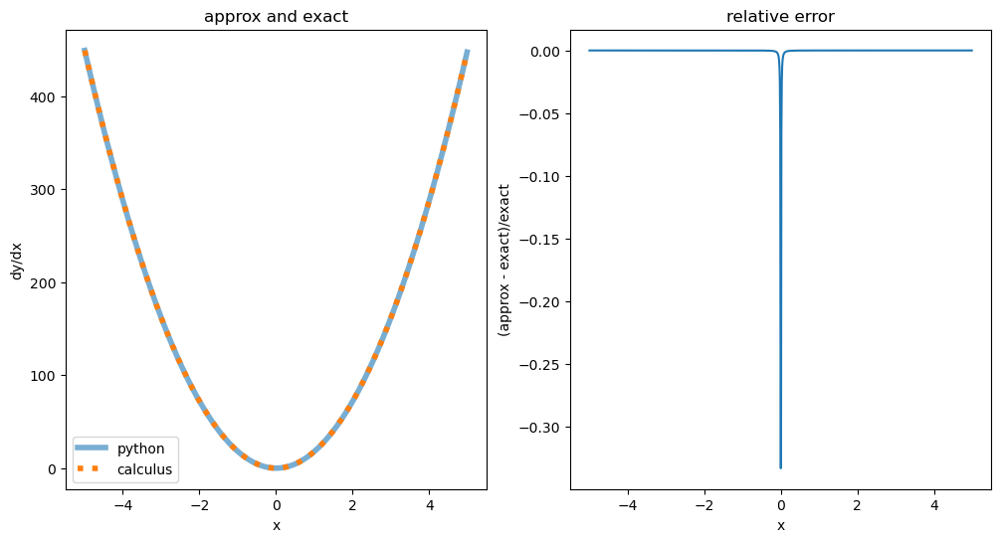
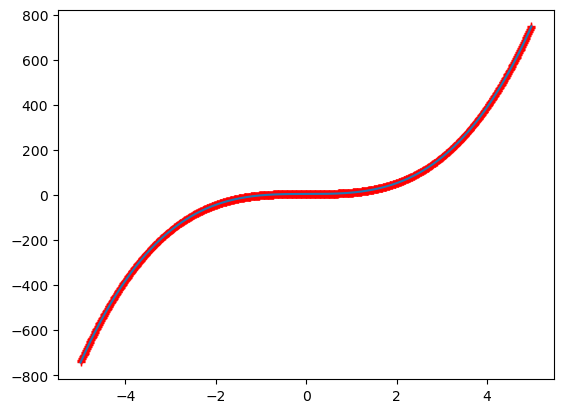

worksheet 3: working with numpy arrays#
This notebook demonstrates how to use differences and sums to calculate derivatives and integrals and make some simple plots using the matplotlib module.
Coverage: Project Pythia Numpy basics
Download link for worksheet3_derivs_and_ints.ipynb
import numpy as np
from matplotlib import pyplot as plt
def cubeit(x, a, b):
"""
construct cubic polynomial of the form
y = ax^3 + b
Parameters
----------
x: vector or float
x values
a: float
coefficient to multiply
b: float
coefficient to add
"""
return a * x ** 3 + b
1) Take the derivative of this function with python#
Find the first derivative of \(y = 6x^3 + 5\)
Answer: \(\frac{dy}{dx} = 18x^2\)
In first year you learned that the first derivative was:
So calculate \(\Delta y\) and \(\Delta x\) in python using numpy.diff and divide, does it agree with the calculus answer?
#
# create 1000 x values from -5 to 5
#
spacing = 0.01
x = np.arange(-5, 5, spacing)
#
# find dx and dy
#
dx = np.diff(x)
y = cubeit(x, 6, 5)
dy = np.diff(y)
deriv = dy / dx
#
# compare to the exact answer
# note that deriv is one element shorter than x or y, so find
# the average value for each interval so they line up
#
exact = 18 * x ** 2.0
exact = (exact[1:] + exact[:-1]) / 2.0
avgx = (x[1:] + x[:-1]) / 2.0
fig, (ax1, ax2) = plt.subplots(1, 2, figsize=(12, 6))
ax1.plot(avgx, deriv, linewidth=4, alpha=0.6, label="python")
ax1.plot(avgx, exact, linestyle=":", linewidth=4, label="calculus")
ax1.legend()
ax1.set(xlabel="x", ylabel="dy/dx", title="approx and exact")
ax2.plot(avgx, (deriv - exact) / exact)
_ = ax2.set(ylabel="(approx - exact)/exact", xlabel="x", title="relative error")

What’s going on above at x=0?#
2) Find the definite integral of this function with python#
In first year you learned that if you start with this sum:
\(\sum\limits_{x= -5}^{x=+5} \left ( 6x^3 + 5 \right ) \Delta x\)
and take \(\lim_{\Delta x \to 0}\) you get the definite integral \(I =\int_{-5}^5 \left ( 6 x^3 + 5 \right ) dx\)
which Newton and Liebniz figured out resulted in \(I=50\):
\(\int_{-5}^5 6 x^3 + 5 dx = \left .\left ( (6/4)x^4 + 5x \right ) \right |_{-5}^5 = (6/4)*(5^4 - (-5)^4) + ((5\times 5) - ((-5)\times 5)) = 50\)
Check using python:
a= -5
b= 5
def calc_int(a,b):
out = 6/4.*(b**4. - a**4.) + (5*b - 5*a)
return out
print(f"{calc_int(a,b)=:.1f}")
calc_int(a,b)=50.0
So to do this integral in python, just use numpy.sum(f(x)*dx). The only trick is that
dx=np.diff(x)
creates a vector that is 1 shorter than f(x). So replace y with the average value of y in each dx inteval so that you can multiply vectors of the same length.
spacing = 0.01
x = np.arange(-5, 5, spacing)
#
# find dx and dy
#
dx = np.diff(x)
y = cubeit(x, 6, 5)
yavg = (y[1:] + y[:-1]) / 2.0
np.sum(yavg * dx)
np.float64(42.47245502984026)
This isn’t very close to the right answer, even though we are using 1000 x values when spacing=0.01. Why is python struggling?
from matplotlib import pyplot as plt
xavg = (x[1:] + x[:-1])/2.
plt.plot(xavg,yavg,'r+')
ax = plt.gca()
ax.plot(xavg,yavg);
#ax.set_xlim(-2.1,-1.9)
#ax.set_ylim(-50,-40)

Question 1: How would you determine the accuracy of the answer if you didn’t have the analytic integral?#
your answer here
Question 2: where is the underestimate coming from?#
Calculate the exact and approximate integrals between the six intervals [-5,-3), [-3,-1) etc. using both finite difference and calculus for dx=0.01. Which region is generating the largest error? Why that region, and why is quadrature giving an underestimate?
Hint: I wrote a companion function to calc_int I called approx_int with the signature
def approx_int(a,b,dx)
and then looped over the intervals, comparing the outputs of calc_int with approx_int
# your code here